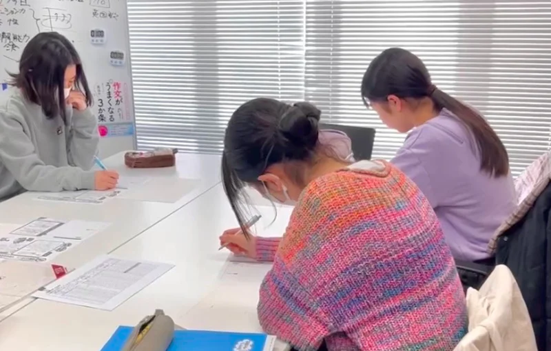
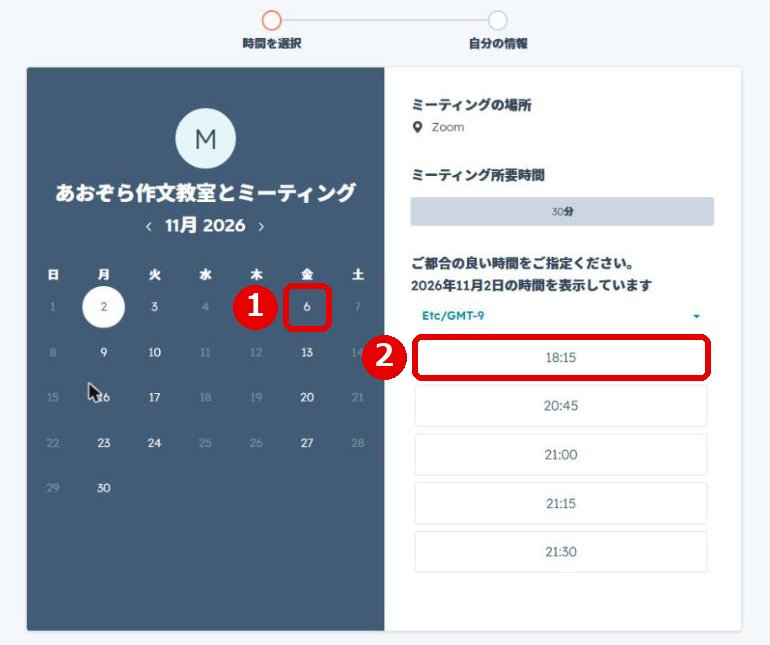
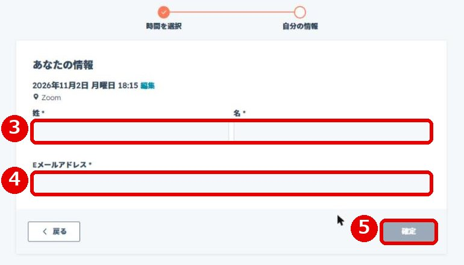

「うちの子、勉強しないんですけど」
勉強が好きではない子にこそ、推薦入試という道があります。作文と面接で、自分の言葉を伝える入試です。

あおぞら作文教室から、推薦入試で合格した学校です
2025年度（2026年春の入試）
9校10名
2024年度（2025年春の入試）
8校9名
「うちの子、勉強しないんですけど」
勉強が好きではない子にこそ、推薦入試という道があります。作文と面接で、自分の言葉を伝える入試です。
「推薦入試、何から準備すればいい？」
学校選び、内申、作文・小論文、自己PR、面接。何をいつから始めるかを、無料相談で一緒に整理します。
「作文や面接が苦手でも大丈夫？」
「作文が苦手で」と聞いても、実際に書かせてみると全く苦手でないこともあります。まずは書いてみるところからです。
「推薦って、優等生じゃないとダメなんじゃないですか？」
委員長も委員会も部活もやっていない。それでも受かったお子さんは、過去に本当にたくさんいます。生徒会長は、学年に1人しかいません。
その子の中にあるいいところを見つけ出して、学校が掲げる「期待する生徒の姿」をしっかり読み込む。そこに当てはまる自分を作っていけばいい。眞野がそう話しています。
推薦の出願には、通っている中学校の校長先生の推薦が必要です。校内の基準は中学校ごとに違うので、まず担任の先生に相談してください。
知っておきたいことを3つだけ
受検する人は全員、個人面接を受けます。ほかに作文や小論文など、学校ごとに決めた検査があります。
カードそのものに点数はつきません。面接はこのカードをもとに行われるので、書いたことを自分の言葉で話せることが大切です。
たとえば令和8年度の都立足立高校の作文は、「あきらめずに行動した経験」を書く問題でした。特別な実績より、自分の経験を具体的に書けるかが問われます。
いきなり作文を書かせることはしません。好きなこと、毎日続けていること、自分の長所と短所を、会話をしながら一緒に整理します。
そのうえで、お子さんがやりたいことと、志望校が求める生徒の姿が合っているかを確かめ、自己PRカード・作文・面接まで、本人の言葉で書いて話す練習をします。
教室は、合格を約束する場所ではありません。お子さんが自分の進路を考え、自分の言葉で伝えられるようになるまで、一緒に準備します。
書くことを苦手とする子どもたちと向き合ってきた教室だから、できることがあります

いきなり書かせず、会話から材料を見つけます。好きなこと、続けていること、長所と短所。話しているうちに、本人も気づいていなかった「書くこと」が出てきます。
▶ 1分53秒から再生します
自己PRカードに書くことがない、という子の材料の見つけ方を、眞野が動画で話しています。入会の前に、教室の考え方を先生本人の声で確かめられます。
2〜5名講師1人が見る人数
1コマ120分の少人数のグループで、一人ひとりの書いたものと話し方を見ます。人前で話す練習も、少人数だから始めやすくなります。
Qインタビューする時に、親がやってはいけない聞き方はありますか？
▶ この質問のところ（11分45秒）から再生します
思春期のお子さんは、親には本音を話しにくいことがあります。どちらが良い・悪いではありません。教室が第三者として間に入り、本人の考えを聞き出します。
8月〜1月末の間に、受けたいコマ数を選んで申し込みます。1コマは120分の授業1回です
10コマ（120分×10回）
99,000円（税込）
20コマ（120分×20回）
187,000円（税込）
おすすめ
35コマ（120分×35回）
308,000円（税込）
35コマ＋アカデミー
477,400円（税込）
費用のことが気になる方へ
東京都には、受験生のいるご家庭の塾代を支える制度があります。使えるかどうかは、ご家庭の条件によって変わります。
最大30万円塾代を無利子で
東京都の「受験生チャレンジ支援貸付」
塾代を上限30万円まで無利子で借りられます（ライトプランの187,000円なら全額、スタンダードプランでも30万円まで）。対象の高校に入学して所定の手続きをすると、返済が免除されます（審査があります）。使えるかどうかは、お住まいの区の窓口が判断します。足立区の申込締切は2027年1月29日（金）です。
志望校の問題に合わせて、扱う内容を組み立てます
相談だけで終わっても大丈夫です。推薦を受けるかどうかから、一緒に考えます
黄色い「無料相談を予約する」ボタンから、日にちと時間を選びます。くわしくは下の「予約のしかた」をご覧ください。
眞野が、お子さんの今の様子を伺います。推薦を受けるか、何から始めるかを一緒に考えます。
コマ数と教室を決めます。「今回は一般入試に絞る」という答えになることもあります。
話すところから始めて、自己PRカード・作文・面接へ進みます。
1黄色い「無料相談を予約する」ボタンを押すと、予約の画面が開きます。

2カレンダーの白い数字の日が、予約できる日です。押すと、右側にその日の空いている時間が出ます。
3ご都合のよい時間を押します。時間は日本の時間です。

4お名前（姓・名）とメールアドレスを入れます。
5右下の「確定」を押すと、予約ができます。入れたメールアドレスに、確認のメールが届きます。
当日は、塾長の眞野がZoomで30分お話を伺います。
眞野さんへ：この囲みは確認のための説明です。本番で公開するときは消します。
このページに入力フォームを置いていない理由
AIを使ったサイバー攻撃が広がり、ホームページの入力フォームから個人情報が漏れる被害が心配されています。あおぞら作文教室では、お子さんとご家庭の情報を守るため、このホームページには入力フォームを置いていません。ご相談のご予約は、守りの仕組みが整った予約専用の画面（HubSpot）で、お名前とメールアドレスだけをお預かりします。ご質問は公式LINEでお受けしています。
予約ページが開かない場合は、公式LINEからご連絡ください
眞野が、直接お話しします
まずは話を聞いてみたい、という方にぴったりです。足立区立小学校・中学校PTA連合会の後援で、眞野が都立高校推薦入試のコツを、会場で実際にご説明します。参加費はかかりません。
2026年11/23月・祝 参加無料
作文の種類と志望校が求める文章の見極め方、面接で見られる姿勢、自己PRカードの作り方（将来の夢が決まっていない場合の考え方も）を扱います。
画像を押すと、その話の始まりから再生します
塾長の眞野と、経験豊富な講師たちがサポートします

株式会社立命 代表取締役／あおぞら作文教室 塾長
眞野 玲子
推薦入試対策クラスは、眞野のほか、五反野本校では徳永茜子（東京大学教育学部卒、同大学院修士課程在学中）も担当します。ほかの講師が担当する場合もあります。
推薦の出願には中学校の校長先生の推薦が必要で、基準は中学校ごとに違います。まず担任の先生に相談してみてください。推薦では通知表の成績も点数に入りますが、面接や作文の点も合わせて見られます。
都立の推薦は、調査書・面接・作文などの合計点の順に合格が決まります。高いから落とされる、という仕組みはありません。
面接は自己PRカードをもとに行われます。カードに書いたことを、自分の言葉で話せるように準備します。
2月の学力検査（一般入試）で、同じ学校や別の学校を受けられます。推薦で合格した場合は、その学校に入学することになり、一般入試は受けられません。
推薦入試の本番は1月下旬ですが、自己PRカードや作文は夏休みから準備を始めるのが理想です。実際には10月以降に入会する方が多く、12月になってから入会の方もいらっしゃいますが、コマ数をある程度取っていただければ、間に合います。
大丈夫です。30分の無料相談で、推薦を受けるかどうかから一緒に考えます。